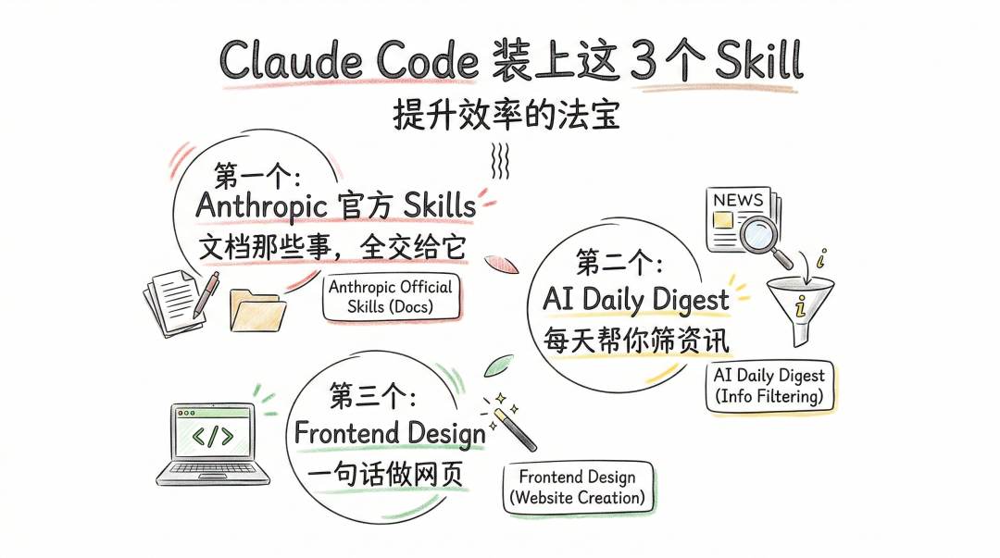

从去年年底开始，Skill 就是 Claude Code 圈子里最火的东西。
简单说，Skill 就是你教给 AI 的一套做事方法。装了 Skill 的 Claude Code，不只是能聊天，是真的能帮你干活——做 PPT、筛资讯、做网页，都行。
2026 年公开的 Skill 已经有好几万个了，还在疯涨。
如果你已经在用 Claude Code，或者正准备上手，Skill 是你一定不能错过的。
今天推荐 3 个我自己在用的，不用写代码，装完就能用。
🦄 第一个：Anthropic 官方 Skills —— 文档那些事，全交给它
这是 Anthropic 官方出的 Skill 套装，相当于 Claude Code 的"原厂配件"。
装完之后，Claude Code 就变成了你的文档助手：
做 PPT。把数据或者大纲丢给它，直接生成一份完整的演示文稿。我上周的项目周报，丢个数据给它，3分钟出来了，直接准点下班。
写 Word 文档。会议纪要、项目报告、方案文档，告诉它你要写什么，它帮你搞定格式和内容。
整理 Excel。公式不会写？告诉它"帮我算这列数据的增长率"，它直接帮你写好公式填进去。数据分析、做图表，也都能做。
处理 PDF。合并多个 PDF、填表单、提取里面的文字和表格。
一个 Skill 套装，覆盖了日常办公最高频的四件事。
安装方式：把下面这个地址发给 Claude Code，让它帮你装就行。
GitHub：https://github.com/anthropics/skills
🦄 第二个：AI Daily Digest —— 每天帮你筛资讯
你有没有过这种感觉：每天刷一圈推文和公号，花了一个小时，真正有价值的就三四篇。
剩下的时间全浪费了。
这个 Skill 帮你解决信息焦虑。
它会自动扫描 90 个顶级博客（信源来自 AI 领域顶尖科学家 Andrej Karpathy 推荐的列表），用 AI 给每篇文章从三个维度打分：跟你相不相关、写得好不好、是不是最新的。
然后挑出得分最高的那几篇，生成一份中文摘要报告。
怎么用？在 Claude Code 里输入 /digest，等一分半钟，报告就出来了。
报告长什么样：开头是"今日看点"，AI 自己总结了一段概览。下面是每篇文章的评分、摘要、原文链接。虽然原文是英文，但摘要全是中文，读起来没障碍。
第一次用需要配几个选项：想看过去24小时还是一周的、筛多少篇、用什么语言。选好一次就存下来了，以后不用再设。
适合谁？只要你有"信息焦虑"——不管是做内容的、做产品的、搞投资的——都可以试试。
（我自己也做了个类似的资讯整理工具，具体怎么搭的，星球里有教程，这里先讲思路。）
GitHub：https://github.com/vigorX777/ai-daily-digest
🦄 第三个：Frontend Design —— 一句话做网页
你跟 Claude Code 说：
"帮我做一个个人介绍网页，深色风格，左边放头像，右边放项目展示区。"
它直接给你生成一个能打开、能用的网页。
不用懂任何技术。你描述你想要什么样子，它就给你做出来。
想做个人简历网站？可以。
想做一个产品介绍页？可以。
活动页面、作品集展示、公司官网的初版……只要是需要一个好看网页的场景，都能用。
而且好消息是：这个 Skill 包含在第一个（Anthropic 官方 Skills）里面。你装了第一个，就自动有了这个能力。
所以严格来说，你需要动手装的其实只有两个。
🦄 最后说两句
3 个 Skill，覆盖 3 个场景：
- 办公文档 → Anthropic 官方 Skills
- 信息筛选 → AI Daily Digest
- 做网页 → Frontend Design
建议先装第一个，5分钟就能搞定。装完试着让它帮你做个 PPT，你会发现 Claude Code 一下子就不一样了。
Claude Code 的创始人 Boris 说过一句话："如果某件事你一天要做两次以上，就值得把它变成一个 Skill。"
2026年，公开的 Skill 已经有好几万个了。今天推荐的这 3 个只是起点。
你日常还有什么重复性的工作，也许已经有人做好了现成的 Skill。去翻翻，会有惊喜的。
想系统学 Claude Code？
今天讲的 3 个 Skill 只是入门。怎么找到适合自己的 Skill、怎么自己写一个、怎么把 Claude Code 真正变成你的工作搭档——这些更深的东西，我都放在知识星球里了。
星球里有完整的 Claude Code 实操教程、Skill 搭建指南、我自己用的工具配置，还有一群在用 Claude Code 的人一起交流踩坑。
公号讲方向，星球给落地。扫码加入，一起折腾👇